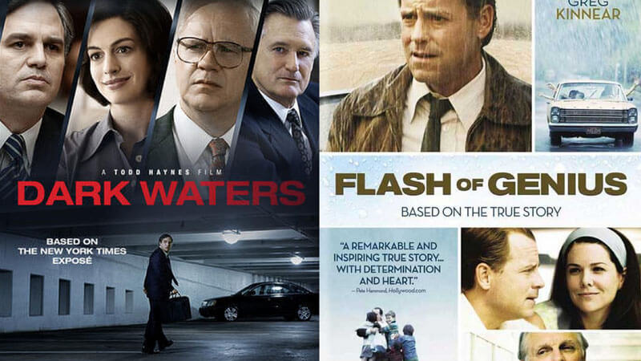
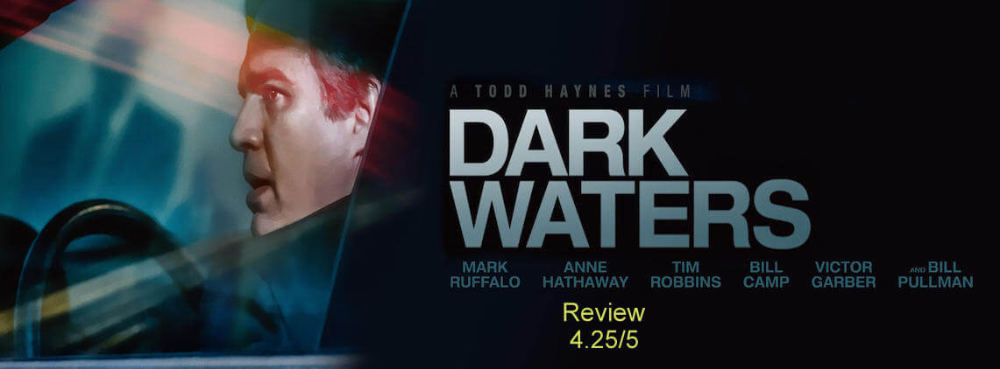

Dark Waters Review | A Single Man V/S A Multibillion Dollar Corporate by Jithin J Prasad

Posted By : Jithin J Prasad | Date : 04-02-2020
Biopics are a kind of trend these days,and when it comes to Hollywood they does deliver it good. The same happens to Dark Waters, which unlike most of the biopics is a true story about a man fighting a big Titan in the Corporate world,DuPoint. There are a few good films which shows the struggle a man/woman takes upon decades to fight against someone exponentially bigger than him/her, just like Marc Abraham movie Flash of Genius where Greg Kinnear featured as inventor Robert Kearns who took up his fight against the big conglomerate Ford Motor Company who stole the idea of Wind Shield wipers from Robert Kearns and the movie narrates the decades long effort by a single man to get back what rightfully is his.

OK..! Now coming back to Dark Waters, the Todd Haynes director movie stars Mark Ruffalo as Robert Bilott and Anne Hathaway as his wife Sarah Bilott.Being a corporate advocate Robert Bilott on the request of his grandmother, took in a personal case of a farmer who claims that the chemicals released by the nearby factory of DuPoint is the reason for the demise of his 190 cows which drank the chemically poisoned/polluted water. Robert Bilott who happens to be a corporate lawyer usually fights for the corporate have refuses to take upon the case but later when he dug deep into the situation he ends up in finding more and more horrifying things about the issue,including the serious effects of the chemicals on humans such as causing deadly cancers, so he later decides to file a lawsuit against DuPoint on behalf of the farmer.
The film is a fully fledged drama on the struggles that a single man had underwent to fight against a multi billion dollar organisation, one of the titans in the chemical world DuPoint. The lawsuit began in 1996 and lasted for more than 2 decades. The film is based on the 2016 NewYork Times Article The Lawyer Who Became DuPont’s Worst Nightmare by Nathaniel Rich.
The Whole movie's good to watch, the direction,the screenplay, the cinematography and mostly the cast is good,Mark Ruffalo and Anne Hathaway portrayed their characters with ease and the presence of the legend Tim Robbins does fit in perfectly.
The only negative that I have noticed is the ending,it felt a little vague.Note: I am not giving away any spoilers , In the ending they gave away some notes to fill in the gap, that great but it could be more that that.
I would suggest everyone to watch this movie since it deals with some of the major products that we are using in our daily life and the damages chemical wastes can cause to the environment, so it could also act like an information for leading a healthy life.
My Rating : 4.25/5,Must Watch

You can Check the more about the movie from Dark Waters